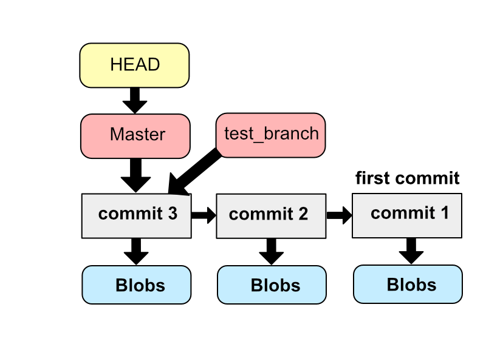
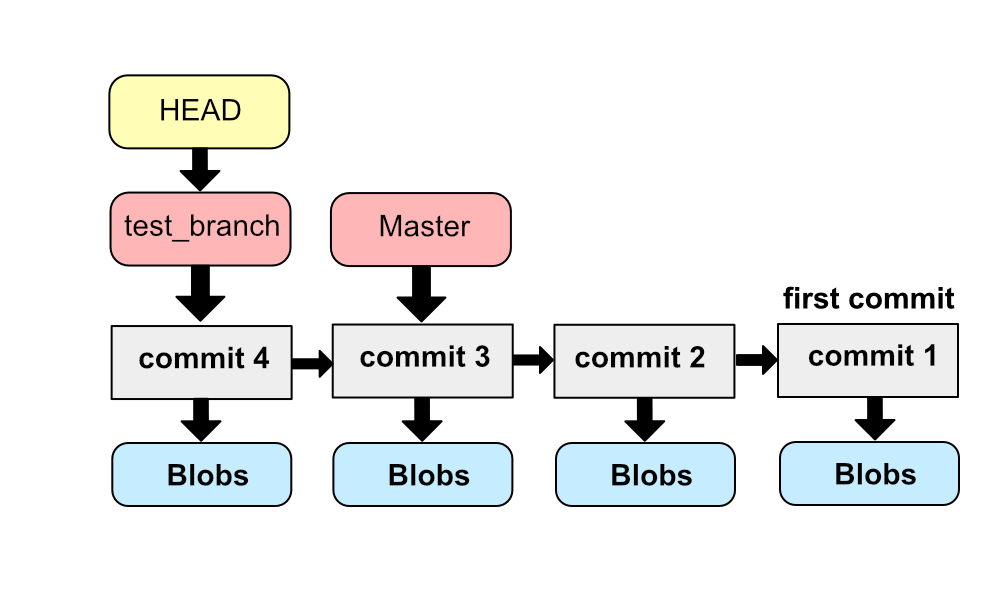

이번 글에선 branch에 대해 다룹니다.
branch?
branch가 뭔지에 대해 이해하려면 git의 버전 관리에 대한 전반적인 이해가 필요합니다. git의 동작 방식을 조금 더 자세하게 들여다봅시다.
하나의 변경된 파일이 staged 상태가 되면, git은 변경된 파일의 스냅샷(변경 당시의 파일 내용)을 찍어 저장합니다. 이를 Blob이라고 부릅니다. staging 된 파일이 3개라면 3개의 Blob이 생기겠죠.
하나의 commit은 다양한 내용으로 구성됩니다.
- Blob들의 주소 값
- 이전 commit의 주소 값
- 저자 정보, 시각, 커밋 메시지 등의 meta 데이터
이러한 정보들을 묶어서 하나의 commit으로 만들고 주소 값을 부여합니다. Blob, Commit은 SHA-1을 통해 해쉬화 하여 해쉬값을 주소값으로 사용하죠.
최초의 commit을 제외하면, 이후 생성되는 commit들은 부모 commit의 주소 값을 기록합니다. 어떤 commit에서 바뀌었는지 알기 위해서죠. 이렇게 commit들을 만들다 보면 방향성 그래프가 생성되겠죠?
branch는 이 방향성 그래프의 한 노드(commit)를 가리키는 포인터, HEAD는 현재 작업 중인 branch를 가리키는 포인터입니다.
[git commit과 master-branch]
git init과 동시에 생성되는 master branch는 자동으로 가장 마지막 커밋을 가리킵니다. 이제 branch를 하나 만들어봅시다.
branch: 분기 명령어
새로운 브랜치를 만들었습니다. 새로 생긴 브랜치는 현재 작업 중인 브랜치의 가장 마지막 commit을 가리키게 됩니다. 현재 상황은 대략 이렇게 되겠네요. 
새로생긴 test_branch라는 브랜치가 commit3을 가리키고 있습니다. 하지만 HEAD는 아직 Master 브랜치를 가리키고 있습니다. HEAD를 바꿔줘야 현재 작업 중인 브랜치를 바꿔줄 수 있습니다.
브랜치를 만들고 checkout 해주는 과정은 다음과 같이 하나로 합칠 수 있습니다.
branch 명령으로 브랜치를 만들고, checkout 명령으로 작업 중인 브랜치를 바꿔줬지만, 그래서 이게 뭘 하는 작업인지는 알 수가 없습니다. 이 상태에서 새로운 commit을 만들어봅시다.
[현재 브랜치가 test_branch 인 상태로 test.txt 내용을 변경함]
자 새로운 commit을 생성했습니다. 이제 브랜치는 어떻게 변했을까요? 
master 브랜치는 변하지 않고, 현재 작업 중인 브랜치인 test_branch가 가리키는 commit이 방금 생성한 commit으로 변경되었습니다.
이 상태에서 현재 작업 중인 브랜치를 master 브랜치로 되돌려봅시다.
|
|
이 상태에서 현재 작업 중인 브랜치를 master 브랜치로 변경하게 되면 현재 상태는 commit3인 상태로 돌아갑니다. 따라서 새로 추가한 내용은 없던 상태가 됩니다.
이제 master 브랜치에서 새로운 commit을 만들어 봅시다.
test_branch와 master는 각각 다른 commit을 가리키게 되었습니다. git에서는 branch를 이용해 새로운 기능(또는 아이디어)가 적용된 버전을 기존 버전에서 분리해 따로 관리해줄 수 있습니다.
브랜치 목록 보기
위의 명령어를 치면
와 같이 생성된 브랜치들을 볼 수 있습니다. *이 붙은 브랜치가 현재 작업 중인 브랜치입니다.
브랜치 삭제
--delete 옵션은 브랜치를 삭제할 때 사용합니다. 이때 지우려는 브랜치가 아직 병합되지 않았다면 git은 에러를 일으키며 브랜치가 아직 병합되지 않았다고 경고합니다. -D 옵션을 쓰면 이런 에러를 무시하고 브랜치를 삭제할 수 있습니다.
주의할 점
변경된 사항들을 commit으로 만들지 않고 브랜치를 checkout 해서 이동하면 이동한 브랜치에 변경된 사항들이 적용되어 버립니다. 반드시 변경사항들을 commit으로 만들어주고 checkout 해줍시다.
마치며
다음 글에선 branch의 병합에 대해 알아보겠습니다.